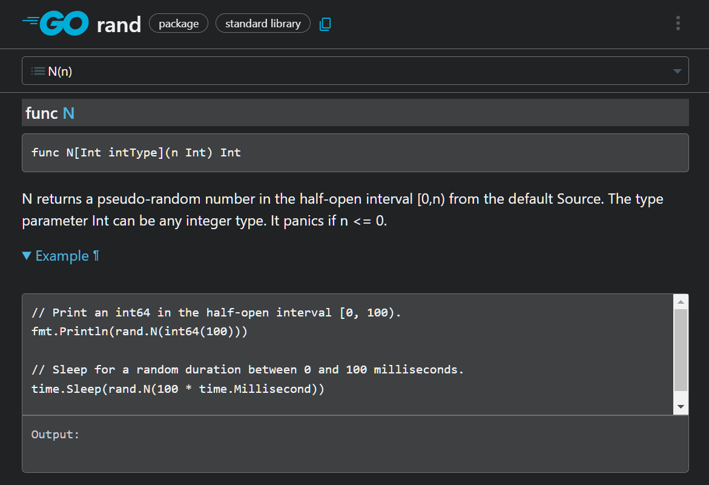

第五章 显示随机数（包与导入）
这次，我们将通过一个显示随机数的程序，学习为了使用 Go 丰富多彩的功能、必须掌握的“包与导入”两个概念。
5.1 显示随机数
以下的程序，可以显示从 0 到 5 的随机数。
package main
import (
"fmt"
"math/rand/v2"
)
func main() {
fmt.Println(rand.N(6))
}
结果每次都不同，以下是一个运行程序的例子。
$ go run .
3
$ go run .
0
重点：在 Go 等语言中，数列通常从 0 开始。例如， rand.N(3) 会随机返回 0、1、2 这三种数字中的一个。这种计数方式在日常生活中不太常见，但在编程中实际上更为方便。
[面向有经验的人] 随机种子
Go 的 math/rand/v2 包的全局函数生成的随机数，每次都不一样（随机化）。这是因为这样在安全性上更为可取。
但在游戏中，固定随机数的种子值，以实现“可再现性”是常见的做法。例如，可以通过仅保存种子值，而不是所有数值来重现世界。比如在《我的世界》中，通过相同的种子值，可以让玩家游玩同一世界，甚至像著名的《德鲁亚加之塔》，也有将随机种子融入游戏设计中的美谈。
在 Go 中生成种子固定随机值的方法，是将种子值传递给 rand.NewPCG 函数或 rand.NewChaCha8 函数，以创建随机数生成器。
5.2 包和导入语句
包是将 Go 程序捆绑在一起的单位。此外，通过导入，可以引入其他包的功能。
下面这个程序，导入了 fmt 包和 math/rand/v2 包。 math/rand/v2 包是处理随机数和随机数的包。
import (
"fmt"
"math/rand/v2"
)
上面的两个包被 () 起来。在语法上，上面的代码，与下面这两行导入语句的意思相同。
import "fmt"
import "math/rand/v2"
5.3 导入路径和包名
导入语句中写的字符串，被称为导入路径。
导入路径是指示包的位置的东西。 "fmt" 和 "math/rand/v2" 就是其中的例子。
在程序中使用包的功能，需要在包名后加上点 . ，像 fmt. 和 rand. 这样写。
有像 fmt 这样，导入路径（最后一个单词）和包名相同的例子。但也有像 math/rand/v2 和 rand 那样，包名与路径稍微不同的时候。
这方面没有严格的规范，所以让我们随意一点吧。
5.4 查看文档
全世界的公开 Go 包的文档都汇集在 pkg.go.dev 这个网站上。对于使用 Go 编程的人来说，这是必不可少的工具。因此如果未来想找未知的包，请务必参考。 不过，这些包的说明，大多数是用英文写的。因此建议使用浏览器的扩展功能翻译阅读。
 上图是 rand.N 函数的文档。有的包，可能会附带示例程序。
[面向有经验的人] 导入路径和包名、模块的详细信息
如果导入路径以 github.com/ 等域名开头，那么这个包将从互联网上获取。
如果不是，该包是 Go 的标准包，将从 GOROOT（Go 的安装位置，可以用 go env GOROOT 这个命令确认）的 src 目录下获取。
导入路径以斜杠分隔的最后一个元素通常是包名，但这个规则并不是绝对的。
- 以
/v2结尾的包表示版本 2。主版本变化，意味着新版本不兼容旧版本，因此 Go 建议通过**更改导入路径（这里就是加了一个/v2）**来区分版本。 - 也有像
github.com/mattn/go-sqlite3（此包的包名是sqlite3）这样，包名与路径不一致的情况。根据作者的需要，可以自定义导入路径和包名。
本章总结
- 通过使用软件包，可以使用各种功能。
- 要使用包，首先需要指定导入路径（
math/rand/v2等）并进行导入。 - 使用包名（
rand等）调用包的功能。